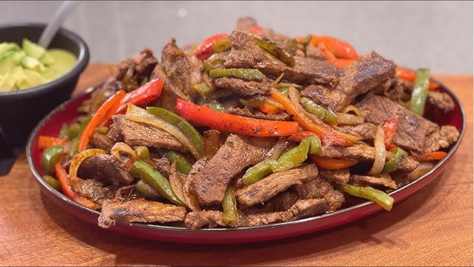

Proteínas
Filete de salmón al horno con ensalada de espinacas y aguacate
Ingredientes:
1. Filete de salmón fresco (rico en proteínas y ácidos grasos omega-3).
2. Espinacas frescas.
3. Aguacate, rodajas de pepino y almendras laminadas.
4. Limón, sal y pimienta.
Preparación:
1. Precalienta el horno a 200 °C.
2. Sazona el salmón con sal, pimienta y jugo de limón, y hornea durante 15-20 minutos.
3. Prepara una ensalada mezclando espinacas, aguacate, pepino y almendras, y aliña con aceite de oliva y vinagre balsámico.
4. Sirve el salmón junto a la ensalada.
Tacos de lechuga con carne molida
Ingredientes:
1. 500 g de carne molida magra (res o pavo).
2. 8 hojas grandes de lechuga.
3. 1/2 cebolla picada.
4. 2 dientes de ajo picados.
5. 1 cucharadita de comino en polvo.
6. 1 cucharadita de pimentón dulce (paprika).
7. Sal y pimienta al gusto.
8. 1 aguacate cortado en cubos.
9. 1 tomate picado en cubos.
10. Jugo de limón (opcional).
Preparación:
1. En una sartén, calienta un poco de aceite en aerosol o de oliva y sofríe la cebolla, el pimiento y el ajo durante 2-3 minutos.
2. Agrega la carne molida, sazona con sal, pimienta, comino, pimentón y chile en polvo, y cocina hasta que la carne esté dorada y bien desmenuzada.
3. Lava y seca las hojas de lechuga.
4. Coloca una porción de carne cocida en cada hoja de lechuga y añade aguacate, tomate y un chorrito de jugo de limón.
Fajitas de res con pimientos
Ingredientes:
1. 300 g de carne de res en tiras (sirloin o similar).
2. 1 pimiento rojo y 1 pimiento verde en tiras.
3. 1 cebolla en julianas.
4. 1 diente de ajo picado.
5. Especias: comino, paprika, sal y pimienta.
6. Tortillas de maíz (opcional).
Preparación:
1. Marina la carne con las especias durante 15 minutos.
2. En una sartén caliente, cocina la carne hasta que esté dorada. Retírala y reserva.
3. Saltea los pimientos y la cebolla con ajo.
4. Mezcla todo y sirve con tortillas o sobre una cama de lechuga.